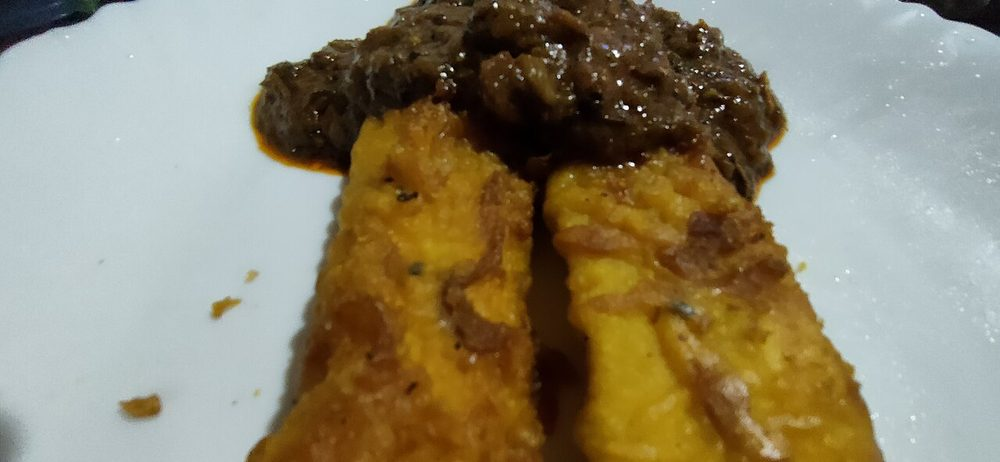

Contains: gluten
Ingredients
Quantities for 4.
- 3 large, very ripe Raw Bananause ripe nendran plantains. Catalogued here as raw-banana
- 1 cup Maida
- 2 tbsp Rice Flourfor crispnessoptional
- 1/4 tsp Turmericfor the classic yellow
- 2 tbsp Sugar
- 1/4 tsp Salt
- about 3/4 cup Water
- 1/4 tsp, crushed Cumin Seedsoptional
- 500ml, for frying Coconut Oilor neutral oil
Cookware
stovetop, kadhai
Checked against the ingredient list for ten allergens: milk, egg, fish, crustaceans, tree nuts, peanuts, sesame, mustard, soy and gluten. Brands vary, so read the label on anything new to you.
Before you start
- The plantains must be properly ripe. Skin heavily blackened, flesh soft and sweet. Underripe nendran is starchy and the snack falls flat.
- Make the batter 10 minutes ahead and let it rest so the flour hydrates; it will cling better to the slippery banana.
- The batter should be the thickness of pouring cream: thick enough to coat the back of a spoon, thin enough to drip off in a steady ribbon.
Method
- Whisk the maida, rice flour, turmeric, sugar, salt and crushed cumin together in a bowl.
- Add the water gradually, whisking, until you have a smooth lump-free batter. Rest 10 minutes.Add the last of the water a tablespoon at a time. Flours vary and a thin batter slides straight off.
- Peel the plantains and slice each lengthwise into 3-4 flat strips about 8mm thick.Too thin and they disintegrate in the oil; too thick and the centre stays firm.
- Heat the oil in a kadhai to 175C. A drop of batter should rise and sizzle within 3 seconds without browning instantly.
- Dip a strip into the batter, let the excess run off, and lower it gently into the oil.
- Fry 3-4 at a time for 2 minutes, until the underside is set and pale gold.Crowding the pan drops the oil temperature and the fritters drink oil instead of frying.
- Turn and fry a further 2 minutes until both sides are deep gold and the surface has stopped bubbling hard.
- Lift onto a rack, not paper, so the underside stays crisp. Repeat with the rest.
- Serve hot with strong black tea.
Storage
Eat within an hour. They soften as they sit. Leftovers can be crisped in a hot oven for 5 minutes, but they will never be as good as the first batch.
Nutrition Low estimate
Low protein: 6 g a serving, 4% of the calories
| Per serving267 g | Per 100 g | |
|---|---|---|
| Calories | 573 kcal | 215 kcal |
| Protein | 6.4 g | 2 g |
| Carbohydrate | 102.2 g | 38 g |
| of which sugars | 43.0 g | 16 g |
| Fibre | 4.5 g | 2 g |
| Fat | 18.3 g | 7 g |
| of which saturated | 14.3 g | 5 g |
| of which unsaturated | 1.7 g | 1 g |
Syrup left in the bowl, or batter that yields more than the stated servings, means the real figures are likely lower. Estimated from raw ingredients using USDA FoodData Central.
More like this: Quick Indian recipes (30 min) · Vegan Indian recipes · Vegetarian Indian recipes · Dairy-free Indian recipes · Kerala recipes
Times, yields, allergens and nutrition are guidance. Use your own judgement on doneness and on storing. More in About.